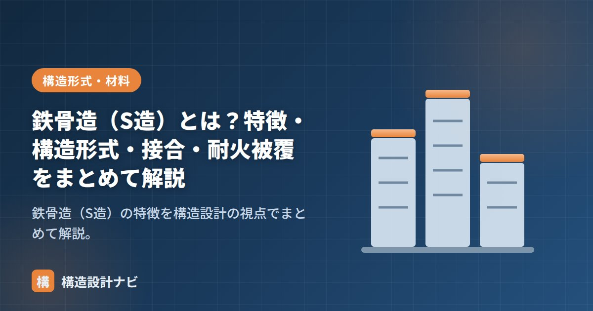

鉄骨造（S造）とは？特徴・構造形式・接合・耐火被覆をまとめて解説

鉄骨造（S造、Steel）は、工場で製作した鋼材を現場で組み立てる構造です。強くて粘り強く、軽いという特性から、超高層ビル・大スパンの工場や体育館・店舗まで幅広く使われます。この記事では構造設計の視点でS造を体系的にまとめます。構造種別全体の比較は「RC造・S造・SRC造・木造の違い」をご覧ください。
重量鉄骨造と軽量鉄骨造
| 種別 | 鋼材の厚さ | 主な用途 |
|---|---|---|
| 重量鉄骨造 | 厚さ6mm超（H形鋼・角形鋼管など） | 中高層ビル・工場・大スパン建築 |
| 軽量鉄骨造 | 厚さ6mm以下（軽量形鋼） | 戸建て・アパート（プレハブ系） |
S造の特徴（長所・短所）
- 長所：高強度・高じん性（粘り）。軽いので大スパン・高層に有利。工場製作で品質が安定し工期が短い。
- 短所：火災に弱く耐火被覆が必要（鋼材は約500℃で強度が半減）。錆対策（防錆）が必要。細い部材は座屈に注意。揺れ・振動を感じやすい。
主な架構形式
- ラーメン構造：柱梁を剛接合。無柱の大空間がつくれる。中高層ビルの定番（詳しく）。
- ブレース構造：斜材の軸力で水平力に抵抗。工場・倉庫で経済的。
- トラス構造：部材を三角形に組み、軸力で大スパンを飛ばす。体育館・屋根架構など。
接合方法
| 接合 | 特徴 |
|---|---|
| 高力ボルト接合 | 部材を強く締め付け、摩擦力で力を伝える。現場接合の主流で信頼性が高い。 |
| 溶接接合 | 母材を溶かして一体化。工場溶接が基本。柱梁接合部などで使用。 |
| 普通ボルト接合 | 小規模・仮設など限定的な用途。 |
柱梁の接合部は地震時に大きな力が集中するため、「柱・梁が壊れる前に接合部が壊れない」ように設計します（保有耐力接合）。
設計上の注意点
- 座屈の検討：細長い圧縮材・梁の横座屈に注意。細長比で評価し、必要に応じて補剛材を入れる。
- 耐火被覆：耐火建築物では、吹付けロックウール・耐火塗料・耐火ボードで鋼材を保護する。
- 防錆：塗装・めっき・耐候性鋼などで腐食を防ぐ。
- 変形・振動：軽量で揺れやすいため、たわみや歩行振動・風揺れ（居住性）の検討が重要。
鋼材の強度の考え方は「応力度とひずみ度・ヤング係数」、構造種別の比較は「RC造・S造・SRC造・木造の違い」、RC造は「鉄筋コンクリート造（RC造）とは？」をどうぞ。
S造の竣工後クレームで意外と多いのは強度不足ではなく「歩行時の床の揺れ」です。たわみの制限値はクリアしていても、床の固有振動数が人の歩くリズムに近いと不快な揺れとして感じられることがあります。大スパンの床を計画するときは、剛性の検討に加えて振動性状まで踏み込んで確認するようにしています。
耐火被覆の種類と選び方
S造最大の弱点である火災への対策が耐火被覆です。鋼材は温度上昇で急速に強度を失うため、規定時間は所定の温度を超えないよう覆います。工法によって仕上がり・コスト・施工性が異なります。
| 工法 | 内容 | 長所 | 短所 |
|---|---|---|---|
| 吹付けロックウール | 繊維状の材料を吹き付ける | 安価。複雑な形状にも施工できる | 表面が粗く仕上げが必要。粉じんが出る |
| 耐火板（けい酸カルシウム板など） | 板を張り付ける | 仕上がりがきれい。厚みの管理が確実 | コストが高め。取合い部の処理が必要 |
| 耐火塗料 | 加熱で膨張し断熱層をつくる塗料 | 鉄骨の形をそのまま見せられる（意匠性） | 単価が高い。膜厚管理がシビア |
| 耐火被覆不要とする方法 | コンクリート充填鋼管（CFT）、耐火鋼（FR鋼）の採用など | 被覆工事が省ける | 適用条件・コストの検討が必要 |
要求される耐火時間は、階数や用途によって異なります（一般に最上階から数えて上層で1時間、下層になるほど長く2〜3時間）。鉄骨の形をそのまま見せたい意匠では耐火塗料が選ばれますが、コストが大きく変わるため早い段階で意匠設計者と方針を共有しておくことが重要です。
柱・梁に使う断面の使い分け
S造では、部材ごとに適した断面形状を選びます。断面の選択は、力の受け方と接合のしやすさで決まります。
| 断面 | 主な用途 | 特徴 |
|---|---|---|
| H形鋼 | 梁（大梁・小梁）、低層の柱 | 曲げに強く経済的。ただし強軸・弱軸で性能差が大きい |
| 角形鋼管（BCR・BCP） | 柱 | 2方向とも同じ強さ。ねじれに強く柱に最適 |
| 円形鋼管 | 柱、トラス材 | 全方向に均質。風圧を受けにくい |
| 山形鋼・溝形鋼 | ブレース、二次部材 | 軽量で安価。主に軸力材として使う |
柱に角形鋼管を使うのは、地震がどの方向から来ても同じ強さで抵抗できるためです。一方、梁は主に一方向の曲げを受けるので、その方向に効率よく断面を配置できるH形鋼が有利になります。「柱は角形鋼管、梁はH形鋼」が現在の中低層S造の標準的な組み合わせです。
よくある質問
Q1. 重量鉄骨造と軽量鉄骨造は何が違いますか？
使用する鋼材の厚さで区別され、一般に厚さ6mmを境に呼び分けます。重量鉄骨造はH形鋼や角形鋼管などの厚い部材を使い、中高層ビルや大スパン建築に用いられます。軽量鉄骨造は薄い軽量形鋼を使い、プレハブ住宅やアパートで多く採用されます。薄い部材は局部座屈しやすいため、設計上の扱いも異なります。
Q2. S造の柱脚にはどんな種類がありますか？
露出型・根巻き型・埋込み型の3種類があります。露出型はベースプレートとアンカーボルトで基礎に固定する方式で、施工が容易ですが回転しやすく、固定度の評価が設計上重要になります。根巻き型は柱脚周囲を鉄筋コンクリートで巻いたもの、埋込み型は柱を基礎コンクリートに直接埋め込んだもので、この順に固定度が高くなります。
Q3. 高力ボルト接合と溶接接合はどう使い分けますか？
一般に、工場では溶接、現場では高力ボルトを使い分けます。溶接は品質管理された工場で行えば信頼性が高い一方、現場溶接は天候や姿勢の影響を受けやすく検査も難しいためです。高力ボルトは締め付けによる摩擦で力を伝える方式で、目視で施工状態を確認しやすく、現場接合に適しています。
まとめ
- S造は高強度・高じん性・軽量で、大スパンと高層に強い。
- 架構はラーメン・ブレース・トラス。接合は高力ボルトと溶接が主流。
- 弱点は耐火と錆。耐火被覆・防錆と、座屈・振動の検討が設計の鍵。